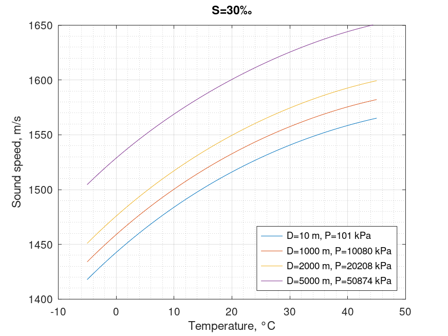

Sound speed in sea. UNESCO equation
Mathematical definition
$$\boxed{C\left( {T,S,P} \right) = {C_W}\left( {T,P} \right) + A\left( {T,P} \right)S + B\left( {T,P} \right){S^{\frac{3}{2}}} + D\left( {T,P} \right){S^2}}$$
| Notation | Description | Units | Limits | Conversion |
|---|---|---|---|---|
| $C$ | sound speed | $\text{m/s}$ | ||
| $T$ | temperature | $^{\circ}\text{C}$ | $0 < T < 40$ | |
| $S$ | salinity | $\text{‰}$ | $5 < S < 40$ | |
| $P$ | pressure | $\text{kPa}$ | $0 < P < 100000$ | $= P \times 10^{-2}$ $\text{bar}$ |
$$\begin{array}{l} {C_W}\left( {T,P} \right) = \left( {{C_{00}} + {C_{01}}T + {C_{02}}{T^2} + {C_{03}}{T^3} + {C_{04}}{T^4} + {C_{05}}{T^5}} \right)\\ + \left( {{C_{10}} + {C_{11}}T + {C_{12}}{T^2} + {C_{13}}{T^3} + {C_{14}}{T^4}} \right)P\\ + \left( {{C_{20}} + {C_{21}}T + {C_{22}}{T^2} + {C_{23}}{T^3} + {C_{24}}{T^4}} \right){P^2}\\ + \left( {{C_{30}} + {C_{31}}T + {C_{32}}{T^2}} \right){P^3} \end{array}$$
$$\begin{array}{l} A\left( {T,P} \right) = \left( {{A_{00}} + {A_{01}}T + {A_{02}}{T^2} + {A_{03}}{T^3} + {A_{04}}{T^4}} \right)\\ + \left( {{A_{10}} + {A_{11}}T + {A_{12}}{T^2} + {A_{13}}{T^3} + {A_{14}}{T^4}} \right)P\\ + \left( {{A_{20}} + {A_{21}}T + {A_{22}}{T^2} + {A_{23}}{T^3}} \right){P^2}\\ + \left( {{A_{31}} + {A_{31}}T + {A_{32}}{T^2}} \right){P^3} \end{array}$$
$$B\left( {T,P} \right) = {B_{00}} + {B_{01}}T + \left( {{B_{10}} + {B_{11}}T} \right)P$$
$$D\left( {T,P} \right) = {D_{00}} + {D_{10}}P$$
| Coefficient | Value | Coefficient | Value |
|---|---|---|---|
| $C_{00}$ | $1402.388$ | $A_{02}$ | $7.166\times10^{-5}$ |
| $C_{01}$ | $5.03830$ | $A_{03}$ | $2.008\times10^{-6}$ |
| $C_{02}$ | $-5.81090\times10^{-2}$ | $A_{04}$ | $-3.21\times10^{-8}$ |
| $C_{03}$ | $3.3432\times10^{-4}$ | $A_{10}$ | $9.4742\times10^{-5}$ |
| $C_{04}$ | $-1.47797\times10^{-6}$ | $A_{11}$ | $-1.2583\times10^{-5}$ |
| $C_{05}$ | $3.1419\times10^{-9}$ | $A_{12}$ | $-6.4928\times10^{-8}$ |
| $C_{10}$ | $0.153563$ | $A_{13}$ | $1.0515\times10^{-8}$ |
| $C_{11}$ | $6.8999\times10^{-4}$ | $A_{14}$ | $-2.0142\times10^{-10}$ |
| $C_{12}$ | $-8.1829\times10^{-6}$ | $A_{20}$ | $-3.9064\times10^{-7}$ |
| $C_{13}$ | $1.3632\times10^{-7}$ | $A_{21}$ | $9.1061\times10^{-9}$ |
| $C_{14}$ | $-6.1260\times10^{-10}$ | $A_{22}$ | $-1.6009\times10^{-10}$ |
| $C_{20}$ | $3.1260\times10^{-5}$ | $A_{23}$ | $7.994\times10^{-12}$ |
| $C_{21}$ | $-1.7111\times10^{-6}$ | $A_{30}$ | $1.100\times10^{-10}$ |
| $C_{22}$ | $2.5986\times10^{-8}$ | $A_{31}$ | $6.651\times10^{-12}$ |
| $C_{23}$ | $-2.5353\times10^{-10}$ | $A_{32}$ | $-3.391\times10^{-13}$ |
| $C_{24}$ | $1.0415\times10^{-12}$ | $B_{00}$ | $-1.922\times10^{-2}$ |
| $C_{30}$ | $-9.7729\times10^{-9}$ | $B_{01}$ | $-4.42\times10^{-5}$ |
| $C_{31}$ | $3.8513\times10^{-10}$ | $B_{10}$ | $7.3637\times10^{-5}$ |
| $C_{32}$ | $-2.3654\times10^{-12}$ | $B_{11}$ | $1.7950\times10^{-7}$ |
| $A_{00}$ | $1.389$ | $D_{00}$ | $1.727\times10^{-3}$ |
| $A_{01}$ | $1.262\times10^{-2}$ | $D_{10}$ | $-7.9836\times10^{-6}$ |
Octave/Matlab implementation
function C = sound_speed_sea_unesco(T,S,P)
% Inputs
% T: temperature \ degree Celsius \ 0 < T < 40
% S: salinity \ ppt \ 5 < S < 40
% P: pressure \ kPa \ 0 < P < 100000
% Outputs
% C: speed of sound in seawater \ m/s
C00=1402.388; C01=5.03830; C02=-5.81090e-2; C03=3.3432e-4;
C04=-1.47797e-6; C05=3.1419e-9;
C10=0.153563; C11=6.8999e-4; C12=-8.1829e-6; C13=1.3632e-7;
C14=-6.1260e-10; C20=3.1260e-5; C21=-1.7111e-6;
C22=2.5986e-8; C23=-2.5353e-10; C24=1.0415e-12; C30=-9.7729e-9;
C31=3.8513e-10; C32=-2.3654e-12;
A00=1.389; A01=-1.262e-2; A02=7.166e-5; A03=2.008e-6;
A04=-3.21e-8;
A10=9.4742e-5; A11=-1.2583e-5; A12=-6.4928e-8; A13=1.0515e-8;
A14=-2.0142e-10;
A20=-3.9064e-7; A21=9.1061e-9; A22=-1.6009e-10; A23=7.994e-12;
A30=1.100e-10; A31=6.651e-12; A32=-3.391e-13;
B00=-1.922e-2; B01=-4.42e-5; B10=7.3637e-5; B11=1.7950e-7;
D00=1.727e-3;
D10=-7.9836e-6;
p = P*1e-2;
Cw = (C00 + C01*T + C02*(T.^2) + C03*(T.^3) + C04*(T.^4) + C05*(T.^5)) ...
+ (C10 + C11*T + C12*(T.^2) + C13*(T.^3) + C14*(T.^4)).*p ...
+ (C20 + C21*T + C22*(T.^2) + C23*(T.^3) + C24*(T.^4)).*(p.^2) ...
+ (C30 + C31*T + C32*(T.^2)).*(p.^3);
A = (A00 + A01*T + A02*(T.^2) + A03*(T.^3) + A04*(T.^4)) ...
+ (A10 + A11*T + A12*(T.^2) + A13*(T.^3) + A14*(T.^4)).*p ...
+ (A20 + A21*T + A22*(T.^2) + A23*(T.^3)).*(p.^2) ...
+ (A30 + A31*T + A32*(T.^2)).*(p.^3);
B = B00 + B01*T + (B10 + B11*T).*p;
D = D00+(D10.*p);
C = Cw + A.*S + B.*(S.^(3/2)) + D.*(S.^2);
end
Computational examples

| $D$\$T$ | $0°\text{C}$ | $10°\text{C}$ | $20°\text{C}$ | $30°\text{C}$ | $40°\text{C}$ |
|---|---|---|---|---|---|
| $10\ \text{m}$ | $1442.62$ | $1483.92$ | $1516.06$ | $1540.59$ | $1558.51$ |
| $1000\ \text{m}$ | $1458.91$ | $1500.37$ | $1532.69$ | $1557.44$ | $1575.52$ |
| $2000\ \text{m}$ | $1475.80$ | $1517.20$ | $1549.55$ | $1574.45$ | $1592.71$ |
| $5000\ \text{m}$ | $1528.73$ | $1568.88$ | $1600.53$ | $1625.45$ | $1644.16$ |
References
- Chen, Chen‐Tung; Millero, Frank J, "Speed of sound in seawater at high pressures", 1977
- Millero, FJ; Li, X, "On equations for the speed of sound in seawater-comment", 1994